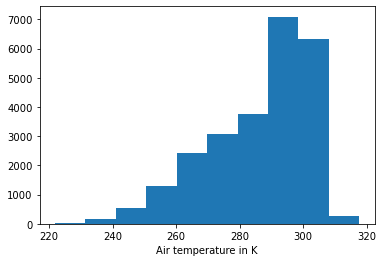
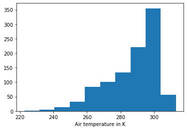
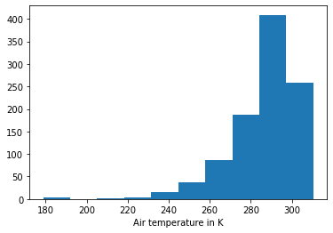
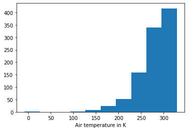
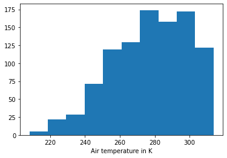

Univariate¶
Import libraries¶
[1]:
import numpy as np
import matplotlib.pyplot as plt
import synthia as syn
Load sample data¶
[2]:
ds_true = syn.util.load_dataset(name='SAF-Synthetic')
# We only select one level as we are dealing with univariate data
ds_true = ds_true.sel(level=-1)
ds_true['temperature_fl'].plot.hist()
plt.xlabel('Air temperature in K');

Fit and generate using samples¶
[3]:
generator = syn.CopulaDataGenerator()
# We fit and store the original samples and use them to recontuct new synthetic samples.
generator.fit(ds_true, copula=syn.IndependenceCopula())
N_SAMPLES = 1000
ds_synth_empirical = generator.generate(N_SAMPLES)
ds_synth_empirical['temperature_fl'].plot.hist()
plt.xlabel('Air temperature in K');

Fit and generate using parametrized distribution¶
[4]:
generator = syn.CopulaDataGenerator()
# We now fit a parametric distribution instead of using the original samples (it may take some time)
dist_names = set(syn.DistributionParameterizer.get_dist_names())
# Remove all very slow distributions
dist_names -= set(['genexpon', 'levy_stable', 'recipinvgauss', 'vonmises', 'ncx2',
'kstwo', 'ncf', 'tukeylambda', 'nct', 'skewnorm', 'norminvgauss',
'gausshyper', 'geninvgauss', 'studentized_range'])
generator.fit(ds_true, copula=syn.IndependenceCopula(),
parameterize_by=syn.DistributionParameterizer(dist_names, verbose=False))
ds_synth_param = generator.generate(1000)
ds_synth_param['temperature_fl'].plot.hist()
plt.xlabel('Air temperature in K');

Stretching and unifomization¶
[5]:
ds_synth_stretched = generator.generate(1000, stretch_factor=2)
ds_synth_stretched['temperature_fl'].plot.hist()
plt.xlabel('Air temperature in K');

[6]:
ds_synth_uniformization = generator.generate(1000, uniformization_ratio=0.5)
ds_synth_uniformization['temperature_fl'].plot.hist()
plt.xlabel('Air temperature in K');

Exporting and saving generated data¶
[7]:
# As the original xarray structured is mainted we can convert or save the data in any of xarray's supoorted formats
ds_synth_param.to_dataframe()
[7]:
| temperature_fl | |
|---|---|
| column | |
| 0 | 302.163574 |
| 1 | 291.881622 |
| 2 | 293.075470 |
| 3 | 299.407440 |
| 4 | 263.578949 |
| ... | ... |
| 995 | 294.080078 |
| 996 | 290.117401 |
| 997 | 272.338257 |
| 998 | 272.479218 |
| 999 | 301.396637 |
1000 rows × 1 columns
[8]:
# Or saving as a netCDF file
ds_synth_param.to_netcdf('ds_synth_param.nc')
Saving the generator¶
[9]:
# Alternatively we can store the generator object into a pickle object, that we can later reload
import pickle
pickled = pickle.dumps(generator)
generator = pickle.loads(pickled)
[10]:
# Or to a file
with open('generator.pkl', 'wb') as f:
pickle.dump(generator, f)
with open('generator.pkl', 'rb') as f:
generator = pickle.load(f)
[ ]: